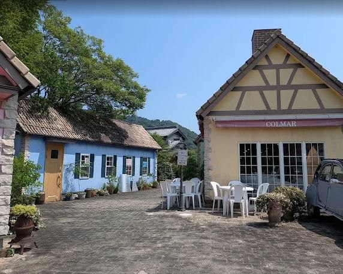
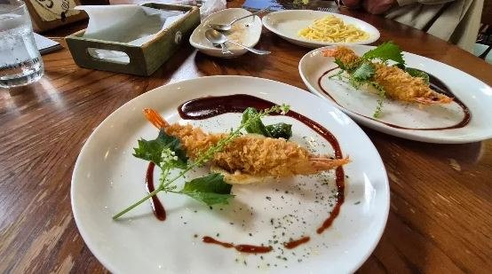
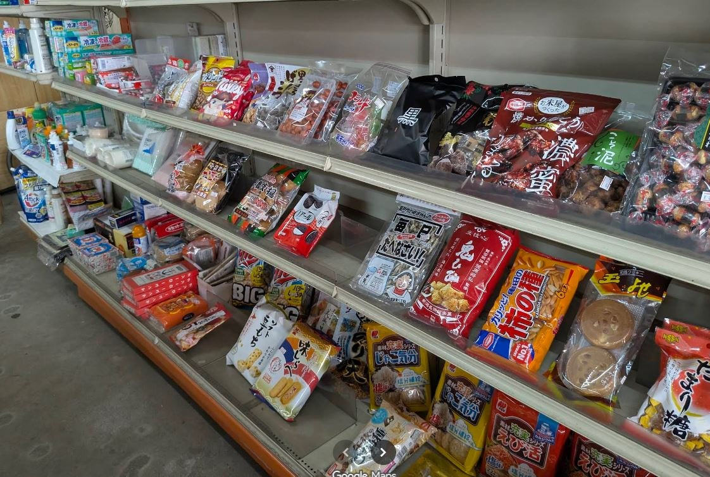
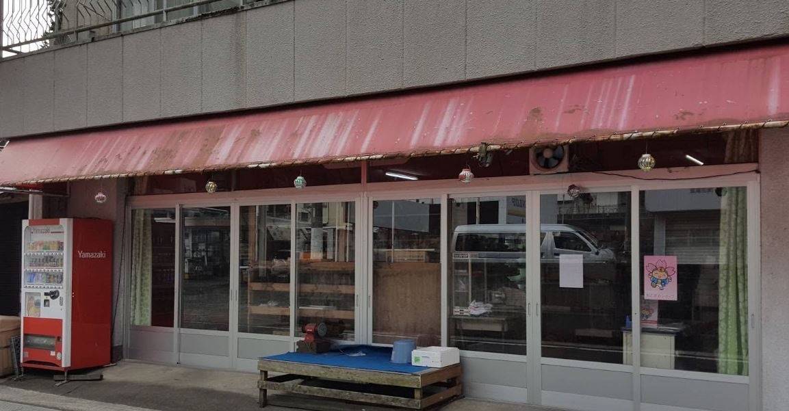
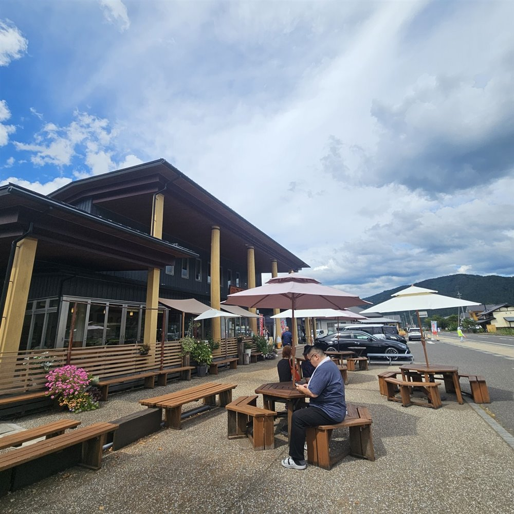
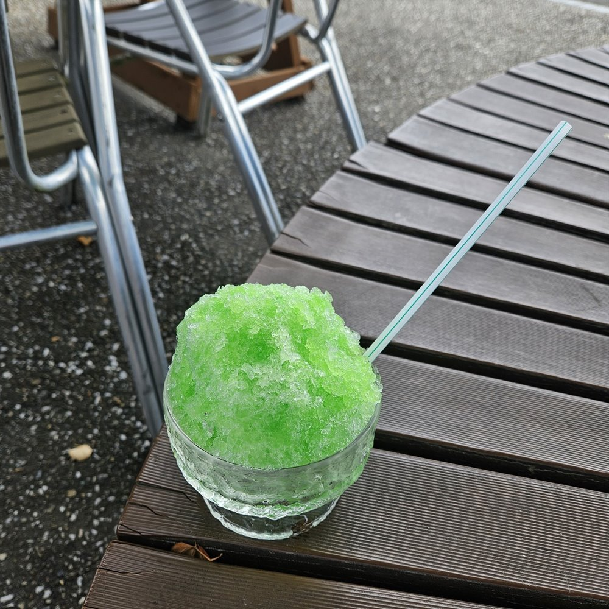

本巣･根尾から徳山ダム方面と､福井まで足をのばしたときのお店です｡
南欧風のおしゃれなカフェ｡せきサイベストカフェオブザイヤー2016受賞店


本巣にある､南欧風のおしゃれなカフェです｡1,000円ちょっとで食べられるランチはコース料理という､コストパフォーマンスがバグっているお店です｡でも､とてもおいしいです｡
せきサイベストカフェオブザイヤー2016受賞店です｡
藤橋の山あいにある､トトロハウスのような隠れ家カフェ


根尾から徳山ダム方面へ走るライドで立ち寄ったカフェです｡藤橋の道の駅に寄ろうと思っていたところ､トトロハウスのようなおしゃれな建物が目に入り､こちらにしました｡
いただいたのはチーズがとろけるトースト｡室内はほどよいアンティーク感で､ゆっくり過ごせます｡撮影の許可もいただいています｡
根尾谷の麓にある､日替わりランチ500円の食堂


根尾谷の麓にある食堂で､ずっと気になっていたお店です｡11時に着いたときはすでに満席でした｡日替わりランチがなんと500円｡
この日は前から決めていた味噌カツを｡スープ､味噌カツ､ご飯に季節のデザートがついて､最後にコーヒーまで出てきます｡お得すぎるおすすめの定食屋さんです｡
徳山ダム･能郷白山･冠山方面へ向かう前の､補給必須のお店


本巣の樽見にあるお店です｡ここから徳山ダムへ向かう馬坂峠や､能郷白山､冠山峠に向かうときは､補給が必須です｡
ドリンクやパンなどが豊富にそろいます｡これから始まる大峠越えに備えましょう｡
地元の野菜と漆器､五平餅の香りがただよう､道の駅の完成形


冠山道路の開通を記念して､福井県の池田町から走った､2026年8月のサイクリングのゴール地点です｡地元の野菜､漆器､五平餅の香ばしい匂い…と､道の駅の完成形の一つだと思います｡
暑い日だったので､涼を求めてかき氷をいただきました｡次の目的地のかずら橋に向けて､ここで元気を回復です｡
※紹介は､トマト工業ブログ(2016年〜2026年)の記事をもとにしています｡営業時間や定休日は変わることがあるので､お出かけの前にご確認ください｡